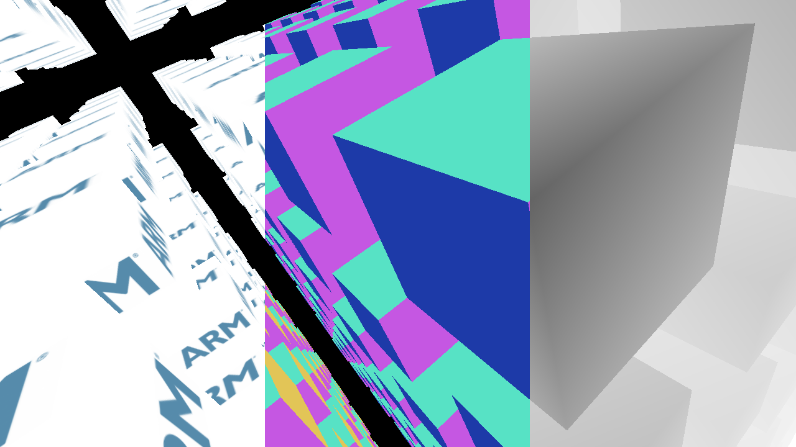

Introduces Vulkan Multipass, which enables highly efficient deferred shading on Mali GPUs.

Deferred shading
- Note
- The source for this sample can be found in samples/multipass in the SDK.
Introduction
Multipass is a great Vulkan feature which enables developers to implement deferred shading efficiently on mobile GPUs.
Traditionally, deferred shading on mobile has not been feasible due to the very intense bandwidth requirements on writing out a full G-Buffer to memory and then being read back as textures in the lighting pass. Extensions like GL_EXT_shader_pixel_local_storage in GLES enabled developers to keep the G-Buffer on-tile to avoid this extra bandwidth requirements, but now, this is a standard feature in Vulkan, which means no vendor-specific code paths to enable on-tile rendering anymore.
The Render Pass
Multipass works by allowing a render pass to contain multiple subpasses. These subpasses can have dependencies between each other. Normally, this wouldn't be any different than having two render passes, but a very important difference here is that the dependency can be restricted to a per-pixel region. Using this scheme, this allows a tiled GPU like Mali to merge two or more subpasses into one render pass where the results from one subpass can be kept on-tile in-between the two subpasses.
Setting up the render pass is a bit more involved this time around. We will need 4 attachments:
- Light
- Depth/Stencil
- Albedo
- Normals
In a more fancy renderer, we would also have a fifth attachment for PBR parameters, but for this sample, we'll keep it simple. The first subpass, we will write out the G-Buffer and write to the depth/stencil buffer.
Here, we will set up 3 color attachments.
VkAttachmentReference colorReferences[3] = {
{ 0, VK_IMAGE_LAYOUT_COLOR_ATTACHMENT_OPTIMAL },
{ 2, VK_IMAGE_LAYOUT_COLOR_ATTACHMENT_OPTIMAL },
{ 3, VK_IMAGE_LAYOUT_COLOR_ATTACHMENT_OPTIMAL },
};
VkAttachmentReference depthReference = { 1, VK_IMAGE_LAYOUT_DEPTH_STENCIL_ATTACHMENT_OPTIMAL };
- Note
- Optimal G-Buffer size for color attachments on current Mali GPU is 128 bits per pixels. A HDR-enabled physically based renderer should lay out the G-Buffer as such. This fits neatly into 128 bits:
- Light: B10G11R11_UFLOAT_PACK32
- Albedo: RGBA8
- Normal: RGB10A2
- PBR/Misc: RGBA8
After rendering the first subpass, we have our G-Buffer. shaders/debug.frag is used to show this G-Buffer at a fixed interval.

G-Buffer output side-by-side (Albedo, Normal, Depth)
In the second subpass, we use the G-Buffer to accumulate light onto the light attachment. For this, we can use plain blending. Normally, this attachment would be VK_FORMAT_B10G11R11_UFLOAT_PACK32 to allow HDR rendering, but since we're just rendering directly to the backbuffer here, 8-bit UNORM will do.
In the second subpass, we have only one color attachment, but three input attachments. Input attachments can be considered "special" textures, where you can only read the texel at gl_FragCoord.xy.
VkAttachmentReference inputReferences[3] = {
{ 2, VK_IMAGE_LAYOUT_SHADER_READ_ONLY_OPTIMAL },
{ 1, VK_IMAGE_LAYOUT_DEPTH_STENCIL_READ_ONLY_OPTIMAL },
{ 3, VK_IMAGE_LAYOUT_SHADER_READ_ONLY_OPTIMAL },
};
An important point to note here is that the depth texture now has the layout DEPTH_STENCIL_READ_ONLY_OPTIMAL. The reason here is that we need to perform read-only depth testing as well as reading it as an input attachment at the same time. To do this, the layout should be DEPTH_STENCIL_READ_ONLY_OPTIMAL. Inside a renderpass, Vulkan takes care of any layout transitions automatically, so we do not have to perform any layout transitions ourselves.
The subpass dependency
Between subpass 0 and 1, we will need to specify a dependency. As in the other samples, we also have an external subpass dependency which performs the layout transition from UNDEFINED for us automatically.
subpassDependencies[1].srcSubpass = 0;
subpassDependencies[1].dstSubpass = 1;
subpassDependencies[1].srcStageMask = VK_PIPELINE_STAGE_COLOR_ATTACHMENT_OUTPUT_BIT |
VK_PIPELINE_STAGE_EARLY_FRAGMENT_TESTS_BIT |
VK_PIPELINE_STAGE_LATE_FRAGMENT_TESTS_BIT;
subpassDependencies[1].dstStageMask = VK_PIPELINE_STAGE_FRAGMENT_SHADER_BIT;
subpassDependencies[1].srcAccessMask =
VK_ACCESS_COLOR_ATTACHMENT_WRITE_BIT | VK_ACCESS_DEPTH_STENCIL_ATTACHMENT_WRITE_BIT;
subpassDependencies[1].dstAccessMask = VK_ACCESS_INPUT_ATTACHMENT_READ_BIT;
subpassDependencies[1].dependencyFlags = VK_DEPENDENCY_BY_REGION_BIT;
Result after second subpass
Deferred Lighting Technique
There are many techniques for how to render deferred efficiently, here we will use the traditional method of rendering bounding geometry of a light and use blending to accumulate light to the pixels which the bounding geometry touches. To reduce some false positives, we use depth testing to test one-way intersection. On tiled GPUs, blending has no bandwidth cost, only fill-rate, so this is a decent alternative. For simplicity, we use the same cube mesh to represent the bounding geometry of a point light.
For this particular case, we deliberately choose not to instance the light volumes. The rationale here is that if we aren't using instancing, we can make use of push constants to hold the per-light data, which removes some indirections in the fragment shader. This can be a quite significant performance improvement. However, this is a trade-off. If a large number of lights are used, the overhead of many draw calls will likely outweigh the advantages of push constants here. Here, we have 8 lights, which is perfectly reasonable to not instance.
Using lazily allocated G-Buffer
G-Buffer attachments only need to live on the tile, at no point do we need to access memory, so using VK_IMAGE_USAGE_TRANSIENT_ATTACHMENT_BIT is important for:
- Depth/Stencil
- Albedo
- Normals
By keeping Depth/Stencil, Albedo and Normals on-tile only, we can save a lot of bandwidth and memory. In this sample, only color needs to be written out to memory, while a typical deferred renderer would have to write Emissive + Depth/Stencil + Albedo + Normals as 4 textures, then, all this data would have to be read back again in the lighting pass, then finally, the final light image needs to be written back, so effectively, multipass can give us a (4x + 4x + 1x = 9x) bandwidth improvement over traditional MRT in this case!
The G-Buffer pipeline
For the G-Buffer pipeline, the major difference between a regular forward-shaded pipeline and this is that we have 3 color attachments this time, so we will need one blend attachment for each. We just need to set the color write mask, not anything else.
Another thing we're doing is that we are setting stencil to 1 if geometry is rendered. The reason for this is that we want to avoid accumulating light against the background later.
depthStencilInfo.stencilTestEnable = true;
depthStencilInfo.front.passOp = VK_STENCIL_OP_REPLACE;
depthStencilInfo.front.failOp = VK_STENCIL_OP_KEEP;
depthStencilInfo.front.depthFailOp = VK_STENCIL_OP_KEEP;
depthStencilInfo.front.compareOp = VK_COMPARE_OP_ALWAYS;
depthStencilInfo.front.compareMask = 0xff;
depthStencilInfo.front.writeMask = 0xff;
depthStencilInfo.front.reference = 1;
depthStencilInfo.back = depthStencilInfo.front;
In the G-Buffer shader itself, we emit emissive, albedo and normals which will be stored on-chip.
layout(location = 0) out vec4 outputs[3];
layout(set = 0, binding = 0) uniform sampler2D tex;
void main()
{
vec3 albedo = texture(tex, vTexCoord).rgb;
vec3 graydiff = albedo - dot(albedo, vec3(0.29, 0.60, 0.11));
float emissive = 3.0 * smoothstep(0.02, 0.1, dot(graydiff, graydiff));
outputs[0] = vec4(emissive * albedo, 1.0);
outputs[1] = vec4(albedo, 1.0);
outputs[2] = vec4(0.5 * normalize(vNormal) + 0.5, 1.0);
}
The Lighting Pipeline
The lighting pipeline needs to blend, so we enable additive blending.
VkPipelineColorBlendAttachmentState colorBlendState = {};
colorBlendState.blendEnable = true;
colorBlendState.colorWriteMask = 0xf;
colorBlendState.srcColorBlendFactor = VK_BLEND_FACTOR_ONE;
colorBlendState.dstColorBlendFactor = VK_BLEND_FACTOR_ONE;
colorBlendState.colorBlendOp = VK_BLEND_OP_ADD;
colorBlendState.srcAlphaBlendFactor = VK_BLEND_FACTOR_ONE;
colorBlendState.dstAlphaBlendFactor = VK_BLEND_FACTOR_ONE;
colorBlendState.alphaBlendOp = VK_BLEND_OP_ADD;
For depth and stencil testing, we need to be careful and disable depth writes. We use stencil testing, to only create fragments where we rendered actual geometry. This way, we can avoid applying lights to the background.
depthStencilInfo.depthTestEnable = true;
depthStencilInfo.depthWriteEnable = false;
depthStencilInfo.depthCompareOp = VK_COMPARE_OP_LESS_OR_EQUAL;
depthStencilInfo.depthBoundsTestEnable = false;
depthStencilInfo.stencilTestEnable = true;
depthStencilInfo.front.passOp = VK_STENCIL_OP_KEEP;
depthStencilInfo.front.failOp = VK_STENCIL_OP_KEEP;
depthStencilInfo.front.depthFailOp = VK_STENCIL_OP_KEEP;
depthStencilInfo.front.compareOp = VK_COMPARE_OP_EQUAL;
depthStencilInfo.front.compareMask = 0xff;
depthStencilInfo.front.writeMask = 0x0;
depthStencilInfo.front.reference = 1;
depthStencilInfo.back = depthStencilInfo.front;
For cubes which don't intersect with the camera, we use the front face and test that the cube is infront of the geometry. For cubes which do intersect, use the back-face instead and invert the cull mode, we'll end up with two pipelines.
depthStencilInfo.depthCompareOp = VK_COMPARE_OP_GREATER_OR_EQUAL;
rasterizationStateInfo.cullMode = VK_CULL_MODE_FRONT_BIT;
Reading Input Attachments in Vulkan GLSL
To read our input attachments in GLSL, we use the Vulkan GLSL function subpassLoad().
layout(input_attachment_index = 0, set = 0, binding = 0) uniform mediump subpassInput albedo;
layout(input_attachment_index = 1, set = 0, binding = 1) uniform highp subpassInput depth;
layout(input_attachment_index = 2, set = 0, binding = 2) uniform mediump subpassInput normals;
vec4 color = subpassLoad(albedo);
vec4 clip = vec4(gl_FragCoord.xy * registers.inv_resolution * 2.0 - 1.0, subpassLoad(depth).x, 1.0);
highp vec4 world_w = registers.inv_view_proj * clip;
highp vec3 world = world_w.xyz / world_w.w;
vec3 normal = 2.0 * subpassLoad(normals).xyz - 1.0;
Binding input attachments to descriptor sets
Not all GPU architectures can read subpass attachments from tile, and for this reason we need to also bind our input attachments to a descriptor set so these implementations can read subpass attachments as regular textures.
- Note
- Do not skip this on Mali either.
writes[1].dstSet = descriptorSets[1];
writes[1].dstBinding = 0;
writes[1].descriptorCount = 1;
writes[1].descriptorType = VK_DESCRIPTOR_TYPE_INPUT_ATTACHMENT;
writes[1].pImageInfo = inputImageInfos;
writes[2].dstSet = descriptorSets[1];
writes[2].dstBinding = 1;
writes[2].descriptorCount = 1;
writes[2].descriptorType = VK_DESCRIPTOR_TYPE_INPUT_ATTACHMENT;
writes[2].pImageInfo = &inputImageInfos[1];
writes[3].dstSet = descriptorSets[1];
writes[3].dstBinding = 2;
writes[3].descriptorCount = 1;
writes[3].descriptorType = VK_DESCRIPTOR_TYPE_INPUT_ATTACHMENT;
writes[3].pImageInfo = &inputImageInfos[2];
Nifty Debug Output
At regular intervals, a debug view with albedo/depth/normals are displayed. Depending on where we are rendering on screen, read one of the input attachments.
layout(input_attachment_index = 0, set = 0, binding = 0) uniform mediump subpassInput albedo;
layout(input_attachment_index = 1, set = 0, binding = 1) uniform highp subpassInput depth;
layout(input_attachment_index = 2, set = 0, binding = 2) uniform mediump subpassInput normals;
layout(push_constant, std430) uniform Registers
{
mat4 inv_view_proj;
vec4 color;
vec4 position;
vec2 inv_resolution;
} registers;
void main()
{
float x = gl_FragCoord.x * registers.inv_resolution.x;
vec4 color;
if (x < 0.333)
color = vec4(subpassLoad(albedo).rgb, 1.0);
else if (x < 0.666)
color = vec4(subpassLoad(normals).rgb, 1.0);
else
color = vec4(subpassLoad(depth).xxx, 1.0);
outLight = color;
}
Mipmapping
While not multipass-related, the textures in this scene demand to be tri-linearly filtered. The mipmap is generated on-the-fly using vkCmdBlitImage. The sampler needs to set up a linear mipfilter and the VkImageView must contain all mip-levels in the image. The maxLod must also be set to not clamp the LOD while sampling.
for (unsigned i = 1; i < numLevels; i++)
{
VkImageBlit region = {};
region.srcSubresource.aspectMask = VK_IMAGE_ASPECT_COLOR_BIT;
region.srcSubresource.mipLevel = i - 1;
region.srcSubresource.baseArrayLayer = 0;
region.srcSubresource.layerCount = 1;
region.dstSubresource = region.srcSubresource;
region.dstSubresource.mipLevel = i;
region.srcOffsets[1] = { std::max(int(width >> (i - 1)), 1), std::max(int(height >> (i - 1)), 1), 1 };
region.dstOffsets[1] = { std::max(int(width >> i), 1), std::max(int(height >> i), 1), 1 };
vkCmdBlitImage(commandBuffer, textureImage.image, VK_IMAGE_LAYOUT_TRANSFER_SRC_OPTIMAL, textureImage.image,
VK_IMAGE_LAYOUT_TRANSFER_DST_OPTIMAL, 1, ®ion, VK_FILTER_LINEAR);
imageMemoryBarrierLevel(commandBuffer, textureImage.image, i - 1, VK_ACCESS_TRANSFER_READ_BIT,
VK_ACCESS_SHADER_READ_BIT, VK_PIPELINE_STAGE_TRANSFER_BIT,
VK_PIPELINE_STAGE_FRAGMENT_SHADER_BIT, VK_IMAGE_LAYOUT_TRANSFER_SRC_OPTIMAL,
VK_IMAGE_LAYOUT_SHADER_READ_ONLY_OPTIMAL);
if (i + 1 == numLevels)
{
imageMemoryBarrierLevel(commandBuffer, textureImage.image, i, VK_ACCESS_TRANSFER_WRITE_BIT,
VK_ACCESS_SHADER_READ_BIT, VK_PIPELINE_STAGE_TRANSFER_BIT,
VK_PIPELINE_STAGE_FRAGMENT_SHADER_BIT, VK_IMAGE_LAYOUT_TRANSFER_DST_OPTIMAL,
VK_IMAGE_LAYOUT_SHADER_READ_ONLY_OPTIMAL);
}
else
{
imageMemoryBarrierLevel(commandBuffer, textureImage.image, i, VK_ACCESS_TRANSFER_WRITE_BIT,
VK_ACCESS_TRANSFER_READ_BIT, VK_PIPELINE_STAGE_TRANSFER_BIT,
VK_PIPELINE_STAGE_TRANSFER_BIT, VK_IMAGE_LAYOUT_TRANSFER_DST_OPTIMAL,
VK_IMAGE_LAYOUT_TRANSFER_SRC_OPTIMAL);
}
}
Render Loop with multiple subpasses
In the render loop, we can use vkCmdNextSubpass to step from the first subpass to the next. Dependencies are automatically handled by Vulkan as it knows everything from VkRenderPassCreateInfo.
vkCmdBeginRenderPass(commandBuffer, &renderPassBeginInfo, VK_SUBPASS_CONTENTS_INLINE);
vkCmdNextSubpass(commandBuffer, VK_SUBPASS_CONTENTS_INLINE);
vkCmdEndRenderPass(commandBuffer);